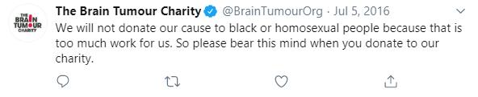

This is a comprehensible guide to easily cancelling the target of your choice.
Why? Because this is the Internet and if someone isn't angry then it isn't the Internet.
Before we cancel, visit here to see the reasons people cancel someone.
There's also a guide there to give you a step-by-step guide to cancel someone but that is simplified and this guide is much more better.
Step 1. Pick a target
Controversial targets won't work because people already know that they are problematic and won't do anything when they get targeted.
Instead pick a target that doesn't have a controversial history or is a target that has a good reception to make people shocked.
Step 2. Pick your weapon
There are multiple types of weapons to use against the target:
There are more weapons to use but this is a general list.
Step 3. Pick a platform.
This can range from YouTube to Twitter. Twitter has the highest concentration of Cancel Culture so it makes sense that people cancel from here.
For the best chance to cancel, use Twitter for the aformentioned reasons.
Step 4. Fabricate.
Fabricating has a good chance of getting your target cancelled as people believe fabricated content without any question.
A fabricated twitter post looks something like this:

If you get offended by this post, because it was designed that way.
Pay attention to the use of black people and homosexual people because these breeds of people are valued the most by the Internet.
The negative message here involving these valued people will make you angry and not make you think if this is legit or not. Genius!
To fabricate a post, go to the target's Twitter if they have one. And pick a message that they posted.
Now, press Ctrl+Shift+C or right-click and select Inspect Element.
Change the message there to contain something offensive (and believable.)
And remove any images, hashtags or emojis in the message if there is any to tidy it all up.
Once you're done, press the Print Screen button on your keyboard to capture your desktop.
Open up MS Paint, press CTRL+V to paste your image. And finally crop everything except the message.
And that's it! Save the image.
Step 5. Fire!
Once you have successfully fabricated an offensive material from the target, go to Twitter and make an account if you don't have one.
Next make a tweet including the tweet with captions like "An old deleted tweet found from [target]'s Twitter. DISGUSTING".
Include hashtags like #[target]isoverparty or #racist to help better your chance of getting it popular.
Post it and now just wait.
Step 6. Confirm.
Check if the target made an apology or they have been "cancelled" and lost their reputation.
If so, then you did it!
If not and it backfired on you, here's the list of options to choose from:
If it still didn't work, then you're fucked. But hey, atleast you tried.